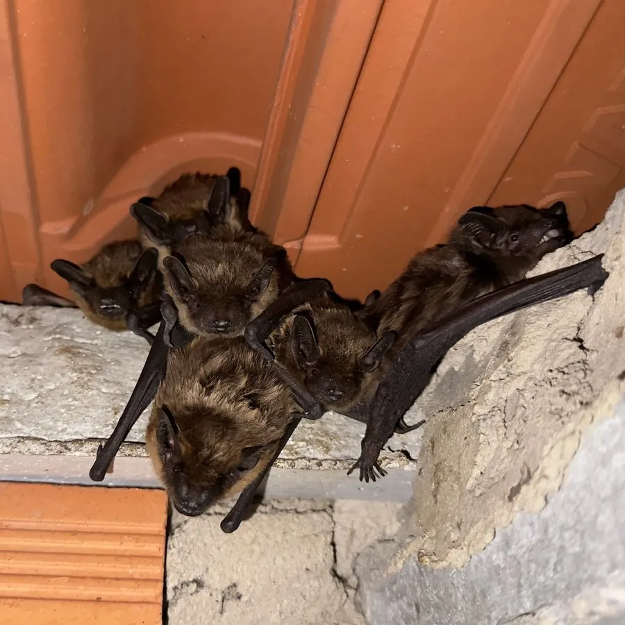

哺乳动物 · 动物界
棕蝠 Eptesicus serotinus

欧洲常见的屋栖蝙蝠，体形粗壮、毛色深棕、耳短而宽，黄昏后沿林缘和街道低飞捕虫，常栖于屋顶与墙缝。
- 分类
- 门脊索动物门纲哺乳纲目翼手目科蝙蝠科属棕蝠属
- 栖息环境
- 城镇建筑屋顶、阁楼、墙缝、树洞与岩缝，觅食于林缘与水域上空
- 地理分布
- 欧洲大部、北非、西亚至中亚，东至中国西北部
- 保护级别
- IUCN 无危（LC）；欧洲多国列为受保护蝙蝠
物种志
棕蝠是体型较大的欧洲蝙蝠，前臂长 45–57 毫米，体重 15–35 克，翼展约 32–38 厘米。毛被浓密，背毛深棕至烟褐色，腹面较浅，毛基深、毛尖浅，呈现轻微霜状光泽；耳短而宽，耳屏略呈蘑菇形，吻部宽钝，面部裸皮深褐。翼膜深褐色，尾膜宽大，飞行时显得沉稳有力。
棕蝠栖息于城镇与乡村的屋顶、墙缝、阁楼、树洞和岩缝，是典型的“屋栖蝙蝠”，常与人类建筑共存。黄昏后起飞，沿林缘、河岸、街道和庭院低空巡飞，捕食甲虫、蛾类、蚊蚋等飞行昆虫，飞行速度不快但机动灵活，靠回声定位在复杂环境中穿行。夏季集群育幼，雌兽在 6–7 月产仔，通常每胎一仔，幼蝠约一个月后能飞。冬季在洞穴、地下室或建筑缝隙中冬眠。它在欧洲部分地区携带狂犬病相关病毒，接触需谨慎。
形态与习性
- 前臂长约 45–57 mm，翼展 32–38 cm
- 体重约 15–35 g
- 食性甲虫、蛾类、蚊蚋等飞行昆虫
- 繁殖6–7 月产仔，通常每胎一仔，哺乳约 4 周
- 回声定位以调频声脉冲定位，峰值频率约 25–30 kHz
- 寿命野外可达 10–15 年
- 栖息类型典型屋栖，常在屋顶瓦下或墙缝群栖
趣味知识
- 棕蝠喜欢住在人类屋顶的瓦片下，是典型的“屋檐房客”。
- 它常在路灯附近来回巡飞，捕食被灯光吸引的蛾子和甲虫。
- 棕蝠飞行不快，却能贴着墙面和树冠急转，靠回声定位避开障碍。